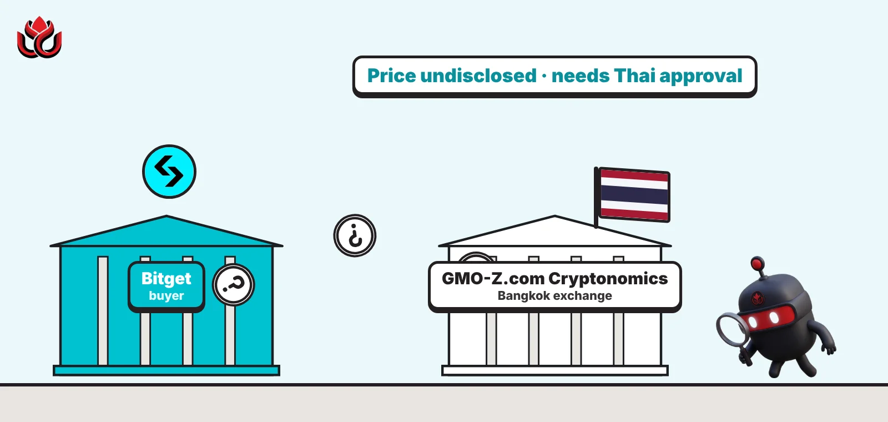
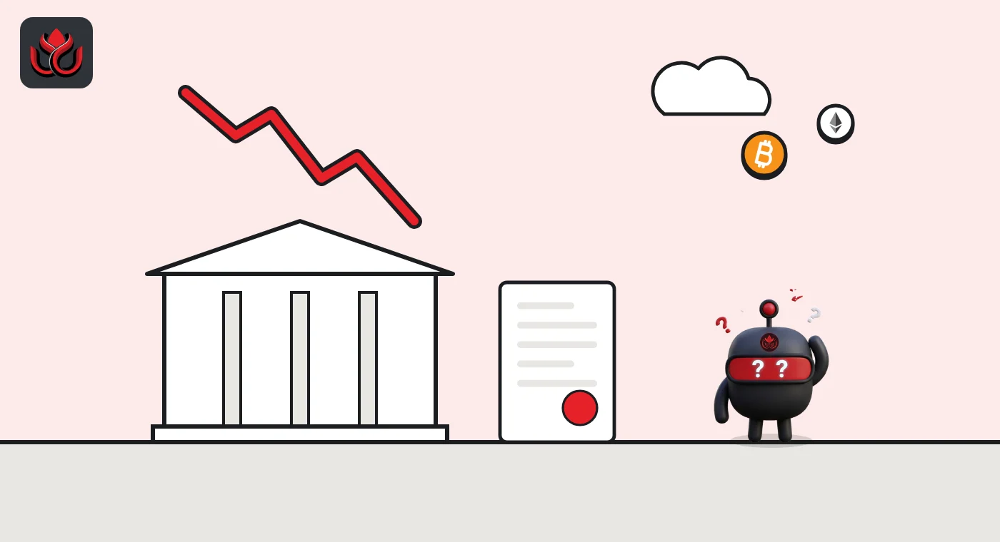
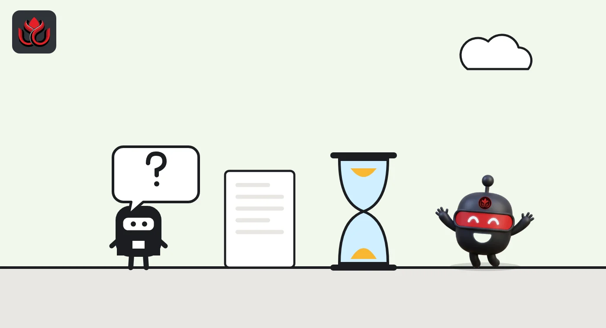

Why is Bitget buying a Thai exchange that lost 74 million baht last year?
Bitget wants GMO-Z.com Cryptonomics, a tiny Bangkok platform with 11 million baht in yearly sales but a Thai license. The price is secret, and GMO filed the sale on the same day Bitget was hacked.

Key points
- Bitget plans to buy GMO-Z.com Cryptonomics, a licensed Bangkok exchange, through BTGT Management (Thailand). Thai regulators must approve.
- The Thai exchange had 11.0 million baht in sales in 2025 and an operating loss of 74.2 million baht.
- The price is secret at the buyer's request, the buyer was set up two days before GMO filed the sale, and that filing came the same day Bitget's hot wallets were breached.
The deal
Bitget said on October 20, 2026, that it plans to buy GMO-Z.com Cryptonomics (Thailand), a licensed crypto exchange and broker in Bangkok that lost 74.2 million baht in 2025. The price is undisclosed, and the deal still needs Thai regulators to approve it. The buyer is BTGT Management (Thailand), a company in which Bitget holds an interest, according to Bitget's announcement. Bitget did not disclose the price or the size of its stake in the buyer.
Bitget CEO Gracy Chen said "building a presence in a market requires local expertise" and called the deal a chance to set up local operations. Bitget said that once the change of control is approved by regulators, it intends to offer its trading platform to Thai users through a locally operated exchange. The company says it serves more than 125 million users worldwide.
The seller had disclosed the sale almost a month earlier. On September 24, 2026, GMO Internet Group filed a notice in Tokyo about selling the Thai unit to BTGT Management (Thailand). The filing did not mention Bitget.
What Bitget is buying
The GMO filing gives a rare look at the target's books. GMO-Z.com Cryptonomics was founded on July 20, 2018. It offers deposit, withdrawal and remittance services for digital assets in Thailand and has share capital of 735.4 million baht. It lost money in every year the filing covers.
- 2023: sales of 1.1 million baht, operating loss of 115.3 million baht.
- 2024: sales of 13.2 million baht, operating loss of 101.7 million baht.
- 2025: sales of 11.0 million baht, operating loss of 74.2 million baht, net loss of 87.6 million baht.
All 7,349,446 shares change hands. GMO-Z.com Holdings (Thailand) held 50.94% and GMO Internet held 49.00%. After the deal, the GMO group will own none. The price was withheld at the buyer's request. GMO said the price reflects market pricing and that the effect on its 2026 results should be minimal.
GMO-Z.com Cryptonomics operating loss
THB million

A buyer created two days earlier
The filing shows the buyer was brand new. BTGT Management (Thailand) was incorporated on September 22, 2026, two days before the filing, with share capital of 2 million baht. It is an investment holding company owned 51% by BTGT Investment Holdings Limited and 49% by BTGT Holdings Limited. The filing lists no existing relationship between GMO and the buyer.
GMO's reasons are about its own strategy. The group has been reviewing its business portfolio since April 2025. Given conditions in the Thai digital asset market, it decided to leave, and it first announced the withdrawal on March 18, 2026. GMO Internet had taken over the Thai unit in March 2025 as part of a transfer of 11 group companies.
The breach on the same day
The timing drew attention. At 3:05 p.m. ET on September 24, the day GMO filed, Bitget's systems detected unauthorized transfers from some of its hot wallets, the exchange said in a security notice. Hot wallets are the online wallets an exchange uses to process withdrawals. Bitget first estimated the loss at about $351.6 million and said its cold wallets were secure.
In a later update, Bitget raised the figure to about $387.5 million after adding assets on Zcash and TRON. It said the loss falls within its User Protection Fund, which held more than $464 million at the time of the first notice. Some of the stolen assets were frozen with help from other firms, and Bitget opened a recovery bounty program.
Withdrawals were paused and then restored in phases, starting with bitcoin on September 28 and ending with other tokens, fiat and peer-to-peer transfers scheduled for October 2. Neither company has linked the breach to the Thai deal.

What still has to happen
The deal is not done until Thai regulators approve the change of control. Bitget said completion depends on that approval, among other conditions. GMO's filing scheduled the share transfer for October 31, 2026. As of November 2, we found no public statement from either company confirming that the transfer has closed.
Bitget has not said when Thai users could start trading, how many users it hopes to reach, or which products it would offer first. The local platform would be run by the Thai company, with Bitget bringing its trading technology, according to its announcement.
Buying a licensed operator can be faster than applying for a new license from scratch. That explains why a business with 11 million baht in yearly sales can still interest a large exchange.
The seller's books and Bitget's next step
GMO Internet Group is listed on the Prime market of the Tokyo Stock Exchange. The sale is carried out by two of its consolidated subsidiaries: GMO Internet, which is itself listed in Tokyo, and GMO-Z.com Holdings (Thailand). The Thai exchange had total assets of 451.0 million baht at the end of 2025, up from 424.3 million baht a year earlier, and net assets of 11.4 million baht, the filing shows.
Bitget said it is looking at other opportunities in Southeast Asia, with a focus on building local operating capabilities that meet each country's rules. Besides crypto, the exchange offers tokenized stocks, ETFs, commodities, foreign exchange and gold, along with an AI agent that helps users execute trades.
Timeline
GMO announces its exit from the Thai digital asset business
BTGT Management (Thailand) is incorporated
GMO files notice of the share sale
Bitget detects unauthorized hot-wallet transfers
Bitget restores withdrawals in phases
Bitget announces the planned acquisition
Scheduled share transfer date, subject to approval
LC Insight analysis
This section is our reading of the facts above, not a statement of fact.
- We think Bitget is paying for a license, not a business. Sales of 11 million baht a year are a rounding error for a global exchange, but a regulated foothold in Thailand is hard to get.
- If Thai regulators say yes, expect a locally run Bitget exchange taking on the established Thai platforms. We would not be surprised if approval takes longer, given the attention on Bitget's September wallet breach.
- A secret price and a two-day-old holding company are common in deals like this, but they leave users and regulators with less to judge. Bitget should say how big its stake in the buyer is.
What's next
- A Thai regulatory decision on the change of control
- Confirmation that the share transfer closed
- A launch date for Bitget services in Thailand
- Updates on recovery of funds from the September breach
Disclaimer. This article is based on public information and the sources listed below as of the update time shown. It is for information only and is not investment, legal or tax advice. Figures may change as companies and authorities publish new data.
Sources
- GMO Internet Group, Notice concerning transfer of shares in an indirect subsidiary (September 24, 2026)
- Bitget, Bitget acquires licensed exchange to expand into Thailand (October 20, 2026)
- Bitget, Security notice on hot wallet incident (September 24, 2026)
- Bitget, Latest incident update: fund tracing and recovery bounty program
- Bitget, Bitget to resume withdrawals in phases (September 26, 2026)